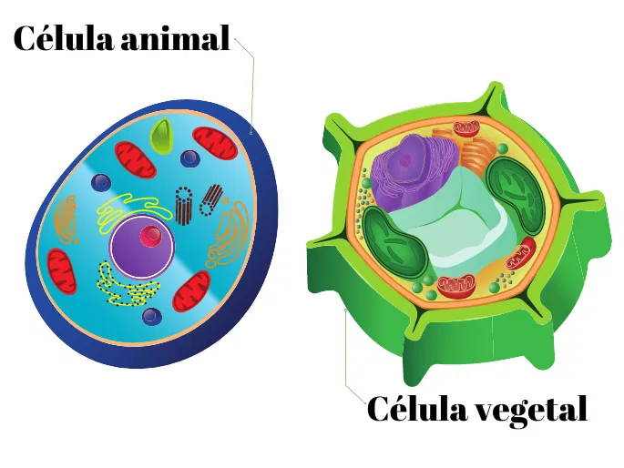

Introdução ao Tema
Apresentação Geral do Conteúdo
No estudo dos conceitos biológicos da vida, é de extrema importância o domínio das estruturas essenciais dos seres vivos: as células, juntamente com o conhecimento de suas partes integrantes, como a parede celular — em células vegetais — e a membrana plasmática. Nesse projeto, iremos abordar detalhadamente as funções, características e estruturação desses componentes celulares a fim de promover o maior conhecimento desses conceitos a partir da produção da Biomaket em conjunto com o desenvolvimento da página web.
Importância das Paredes Celulares e Membranas
A parede celular, presente em plantas e algas, é responsável por fornecer suporte estrutural, manter a forma da célula, proteger contra rupturas causadas pela pressão osmótica e atuar como barreira contra patógenos. Além disso, é fundamental para a sustentação de organismos como plantas e fungos. Essa estrutura rígida impede que a célula inche e se rompa quando absorve água em excesso.
A membrana plasmática, por sua vez, é crucial para delimitar e proteger a célula, principalmente por regular a entrada e saída de substâncias por meio de sua permeabilidade seletiva. Dessa forma, garante a homeostase celular e permite a comunicação e interação com o ambiente externo e com outras células.
Tipos de Células
[Espaço reservado para explicação sobre células animais, vegetais, fúngicas e bacterianas]